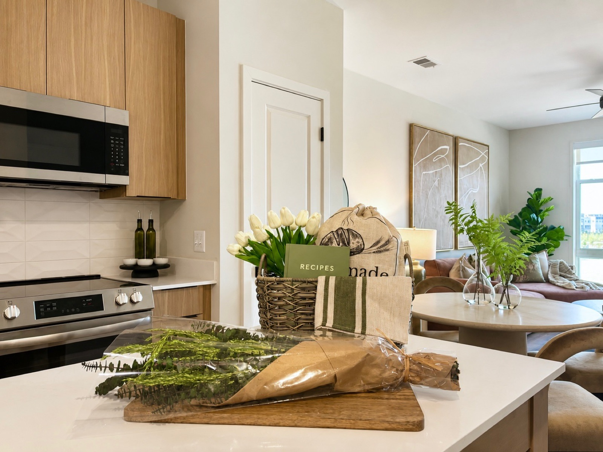
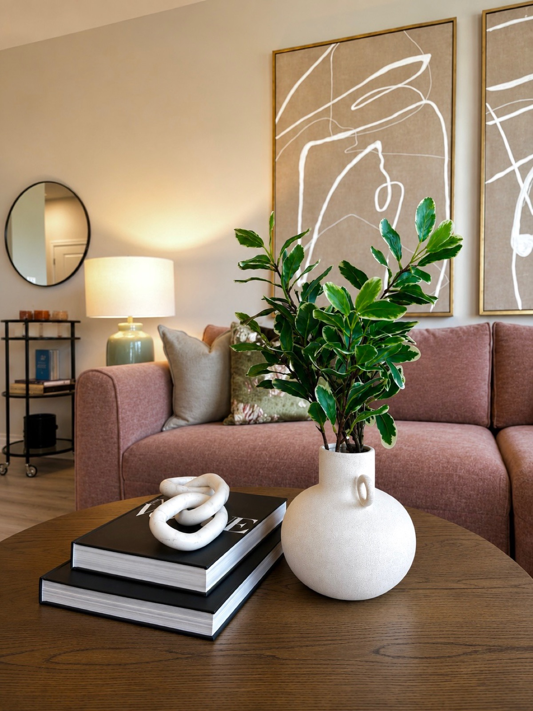
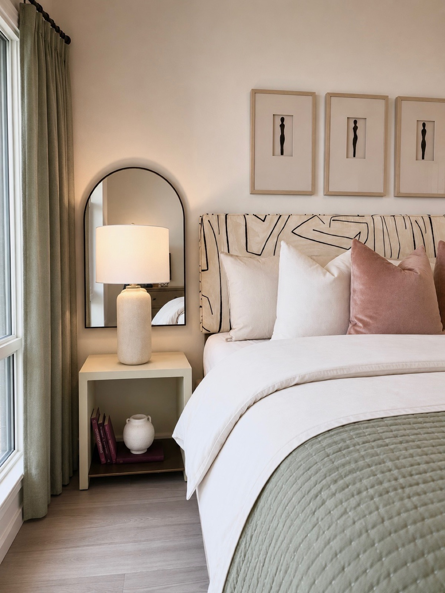
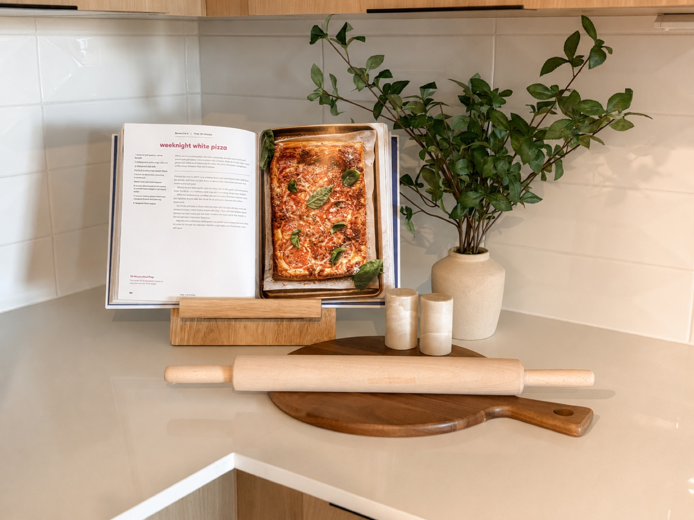
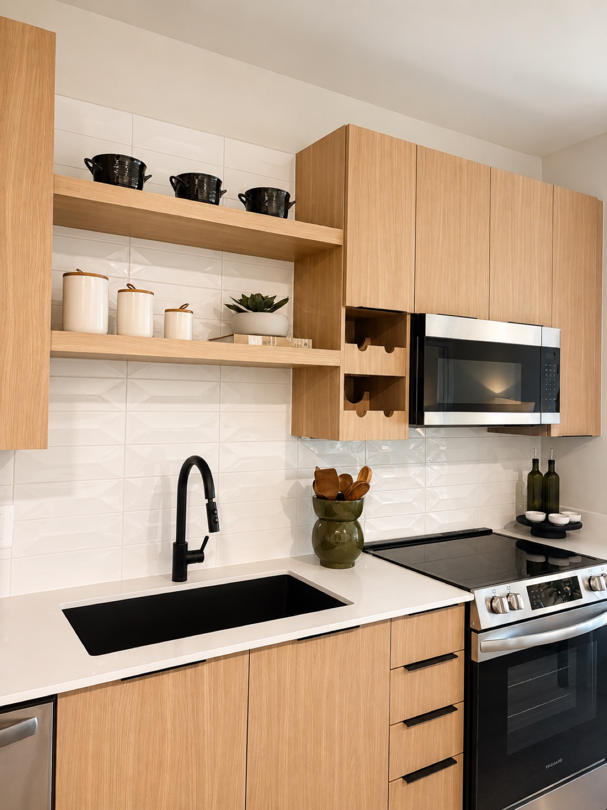
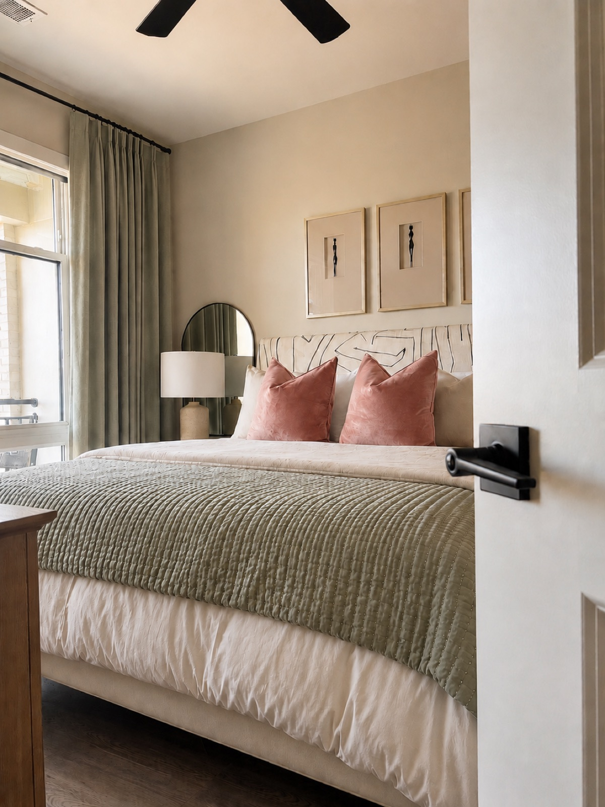
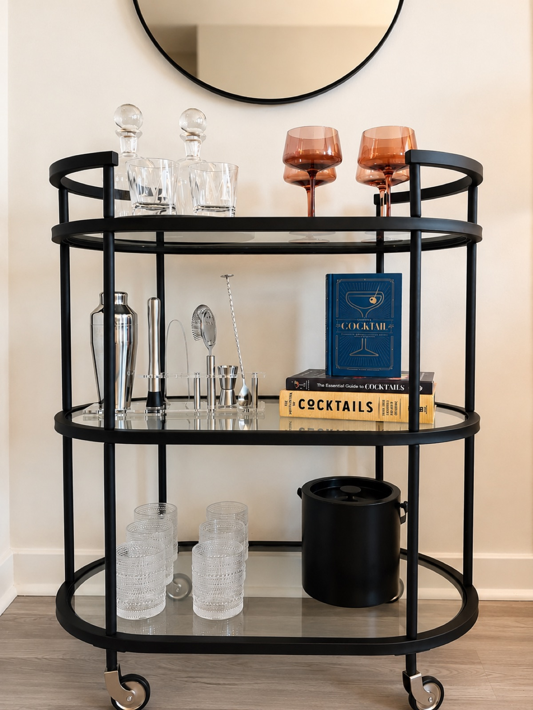

Moorefield is a study in warm restraint. Soft, sophisticated, and deeply comfortable, it layers muted color and natural texture into a home that feels like an exhale.
THE BRIEF
The client wanted a model that would feel like a sanctuary: calm, elevated, and broadly appealing. Comfort came first, but it had to be comfort with polish, a space that felt as considered as it was easy to settle into.



DESIGN DECISIONS
The palette does the quiet work: sage green, soft blush, and warm terracotta play against natural oak and creamy neutrals, so no single room shouts but every room feels intentional. Graphic line-art in gold frames anchors the living spaces, giving the softness a confident spine.
The primary bedroom is the heart of the model, layering a hand-painted graphic headboard, figural prints, and a quilted sage throw into a genuinely restful retreat. In the kitchen, light oak cabinetry and matte-black fixtures keep things current, while styled cookbooks, florals, and a considered bar cart make the space feel lived-in.




THE RESULT
Moorefield reads calm, current, and genuinely inviting. It is the model that lets a visitor breathe out and picture staying, proof that restraint, done well, is its own kind of luxury.